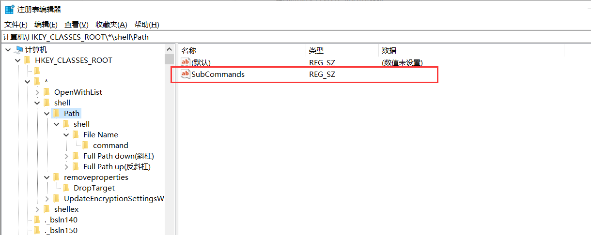
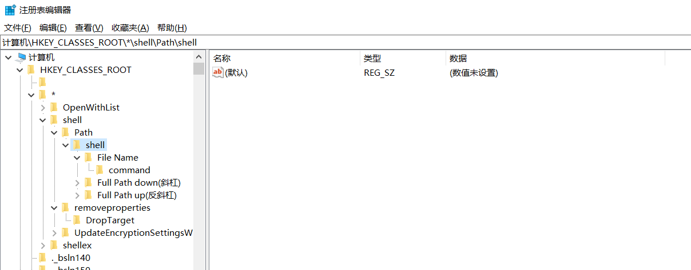
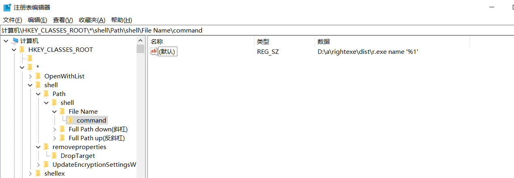

在右键菜单中添加复制文件名或者路径的功能(原理)
简单添加右键菜单并执行指令
1, Win+R regedit 启动注册表
2, 这里以文件右键菜单为例,在注册表中打开一下目录:
可以看到,Path就是我添加进去的,右键菜单中的选项,新建Path之后,就可以看到文件的右键菜单有了”Path”字样
3,如果想把Path当成父目录,下设一级菜单的话,在path下新建如图所示键值:
并下设shell键,shell键不用设置任何内容
4,shell下设的内容就是下一级菜单内容,这里我设置了三个,shell键和下设的三个键不用设置任何值
5,三个键,比如File Name,本身不设键值,要下设一个键,键名为command,一定要是command,command键的默认键值的数据字段为要执行的内容
一般由xxx.exe和参数构成, %1表示右键选择的文件路径和文件名
注册表与菜单的对应关系
上一个大标题的对应的是文件右键的菜单
文件夹右键的内容是不在上面的
文件夹右键的菜单在这里:
1 | hkcr\Directory\shell\Path |
reg操作注册表
windows中有一个可执行文件,叫reg.exe,提供了操作注册表的办法.
详细讲好多嘞,简单举个例子:
1 | reg.exe add hkcr\*\shell\Path /v SubCommands /t REG_SZ |
👆 hhkr指HKEY_CLASSES_ROOT,其他缩写可以百度,add表示添加,”/v SubCommands /t REG_SZ”表示类型为REG_SZ,名称为SubCommands的键,内容为空.如果想设置内容,就在后面加一段 /d xxx
1 | reg.exe add hkcr\*\shell\Path\shell\"File Name"\command /ve /t REG_SZ /d $exePath" name '%1' " |
👆 巩固一下,这句话的意思是,add添加,hkcr*\shell\Path\shell"File Name”\command键的值, 这里是/ve,是一个特殊的/v属性,表示默认参数,这句话的意思是,默认参数为,REG_SZ类型的 数据为$exePath” name ‘%1’ “的键值.
1 | reg.exe delete hkcr\*\shell\Path /f |
👆这是删除,上面的add表示添加,对应的就是删除, /f指令表示force,如果没有/f参数,是需要二次确认的,完整命令的意思就是,删除hkcr*\shell\Path键,不提示直接删除
获取文件名并输出到剪贴板
上面提到的指令,中的%1就是完整的路径文件名,传入exe中作为一个参数出现的,那么这个exe处理这个参数就可以了
下面这个是python的实现方法,python确实效率不高,打包之后有6M左右,以后有机会再换C实现
1 | import sys |